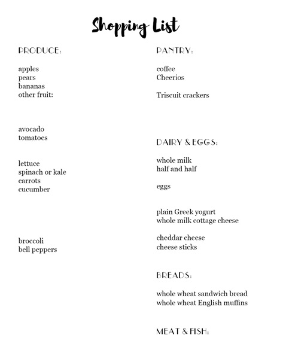

Grocery List Planning
A grocery list can make weekly meal planning easier by helping families shop with a clear plan. Family Fork Weekly encourages visitors to plan meals first, check what they already have, and then create a list based on what is still needed.

Basic Grocery Categories
Organizing a grocery list by category can make shopping faster and reduce the chance of forgetting important ingredients.
- Produce
- Meat and protein
- Dairy
- Pantry items
- Frozen foods
Simple Grocery List Steps
- Choose meals for the week.
- Check the refrigerator, freezer, and pantry.
- Write down missing ingredients.
- Group items by grocery category.
- Shop from the list to save time and avoid extra purchases.
Download a Grocery List Template
Use this simple grocery list template to organize items by category before shopping.